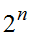
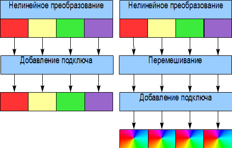

3.1.2. Структурные элементы блочного шифра блочного шифра
3.1.2. Структурные элементы блочного шифра блочного шифра
В качестве начального и конечного преобразования используются самые различные конструкции. Для алгоритма DES – это обычная перестановка бит, для алгоритма E2 – это сложение с подключом и умножение на другой подключ по модулю  , некоторые алгоритмы не имеют начального и конечного преобразования вообще. Сегодня считается, что операции начального и конечного преобразования не оказывают существенного влияния на криптостойкость алгоритма шифрования. Тем не менее, использование зависящих от ключа нелинейных операций по модулю
, некоторые алгоритмы не имеют начального и конечного преобразования вообще. Сегодня считается, что операции начального и конечного преобразования не оказывают существенного влияния на криптостойкость алгоритма шифрования. Тем не менее, использование зависящих от ключа нелинейных операций по модулю  ,
,  позволит защититься от линейного и дифференциального криптоанализа, предполагающих, что можно перебрать часть ключа последнего раунда независимо от остальных частей ключа.
позволит защититься от линейного и дифференциального криптоанализа, предполагающих, что можно перебрать часть ключа последнего раунда независимо от остальных частей ключа.
В качестве нелинейного преобразования используются подстановки или SBox-ы. Они задаются таблично и поэтому имеют размерность от 3 до 8 бит. Количество элементов таблицы замены определяется как , где n − размерность блока подстановки. В табл. 3.1 приведет пример подстановки размерности 4 бита.
Таблица 3.1
Пример подстановки для алгоритма ГОСТ 28147−89
0 |
1 |
2 |
3 |
4 |
5 |
6 |
7 |
8 |
9 |
10 |
11 |
12 |
13 |
14 |
15 |
4 |
10 |
9 |
2 |
13 |
8 |
0 |
14 |
6 |
11 |
1 |
12 |
7 |
15 |
5 |
3 |
Так как размерность нелинейного преобразования почти всегда меньше размера блока, то используется слой параллельных подстановок. К выбору нелинейного преобразования необходимо подходить особенно тщательно, так как это обычно единственный нелинейный элемент системы. Он имеет ключевую роль в обеспечении криптостойкости блочного шифра. Лучшую стойкость имеет схема, где используются подстановки большого размера. Подстановки бывают биективные (обратимые) и небиективные, также они могут иметь разные размерности входа и выхода. Существуют, также, подстановки с оптимальными характеристиками. Это подстановки, сгенерированные с помощью операции взятия обратного элемента в поле по модулю неприводимого полинома.
Линейное преобразование предназначено для перемешивания данных между различными блоками нелинейного преобразования, чтобы отдельные блоки текста не являлись независимыми друг от друга. В качестве простейшего линейного преобразования используется перестановка бит, более сложные линейные преобразования выполняются в некотором векторном пространстве над различными конечными полями. В случае отсутствия линейной операции блочный шифр вырождается в несколько независимых шифров малой (по размеру используемой подстановки) размерности (рис. 3.2), которые легко можно вскрыть частотным анализом.

Рис. 3.2. Визуализация действия этапа линейного преобразования в блочном шифре
Для операции добавления подключа обычно используется операция сложения по модулю 2. Можно также использовать операцию сложения/вычитания и любую другую пару обратимых операций.